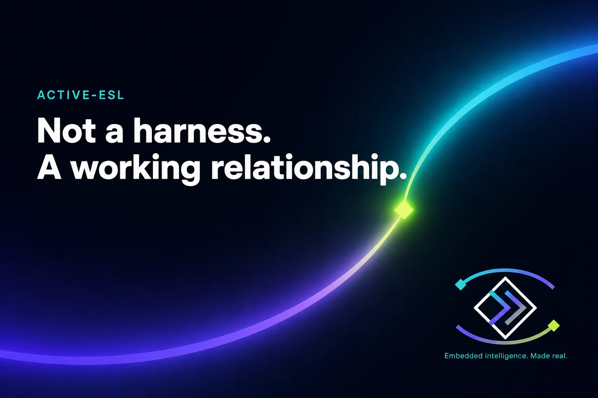

Insights · 5th August 2026
Not a harness. A working relationship.
I don’t like the “AI harness” metaphor. Here is what a working relationship with agents has looked like on real Active-Edge product and lab work.

People have started calling the stack around AI agents an “AI harness.”
I know what they mean. I still don’t like the word.
A harness is something you put on an animal. That is not how I think about working with these tools. At Active-Edge we have been putting a lot of time into how humans and agents work together on real product and lab work - boards, shells, software, the ordinary operational risk that comes with acting as a company. What we are building feels closer to a working relationship than a harness: clear expectations, hard stops where a mistake would really hurt, and a habit of improving the process when it is wrong.
I am not offering a finished doctrine. This is a field note.
Why the word matters
Language shapes what people build next. If the story is “harness the AI,” the default is more control, more rails, more stuff left on all the time. If the story is “work with an agent,” the defaults look more like working with a capable junior colleague: be clear about authority, protect irreversible actions, learn from mistakes, and stop doing things that no longer earn their keep.
We still need structure. Structure is not the same thing as treating the model like livestock.
What has actually helped
A few things that earned their place on live work - without dumping our private playbook into a blog post:
Irreversible actions get hard gates
Soft preference does not belong next to secrets, outbound send, or anything you cannot undo. If a mistake would damage trust or leak credentials, the gate has to fire even when the agent sounds confident.
Context is a budget
If it does not need to be in every turn, it should not be. Thin how-to beats fat always-on prose. Leaving everything loaded “just in case” shows up as slower agents, noisier judgement, and a cost you cannot explain.
Put knowledge in the right place
Chat residue is not memory. Host facts are not preferences. Tickets are not skills. Wrong layer either taxes every prompt or vanishes when you need it.
Attach tools when you need them; take them off when you don’t
Always-on specialty integrations quietly become the main cost.
Learn from pain, then prune
Encode what repeats. Rip what no longer earns its keep. After a big insight, do the ordinary work - verify, thin one fat file, run the cheap check - instead of inventing another layer of process for its own sake.
What failed until we fixed it
A short list, because the failures taught more than the slogans:
- treating the chat transcript as durable memory
- always-on rules for ordinary preferences and lab how-to
- fat instruction files that drifted and re-billed every turn
- specialty tool catalogs left “just in case”
- soft confirm stacks around a real irreversible gate
- chasing the next big idea after a learning instead of ordinary verify
- parallel writers on one tree, and mega-threads that re-tax context
None of that is unique to us. Anyone building serious systems with agents will meet some version of it.
A method you can take without our private stack
- Decide what must never fail.
- Keep that tiny and always present.
- Keep everything else pullable.
- Measure cost before and after changes.
- Improve from real pain, not from inventing a philosophy for its own sake.
That is closer to living standard work than to a product called a harness.
What this is for
At Active-Edge we care about connected products that survive manufacture, field updates, and customer programmes. Agents are already part of how we design and operate. The interesting question is not which model. It is how you and the agent agree to work together when the stakes are real.
If you are doing something similar - especially if you have also rejected the harness metaphor - I would like to compare notes.